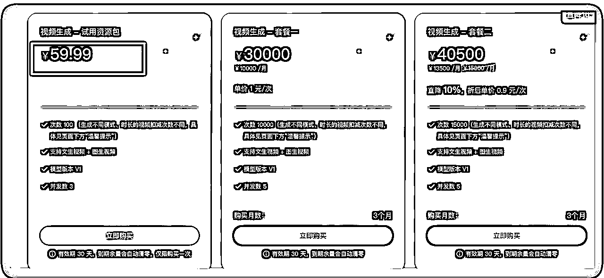
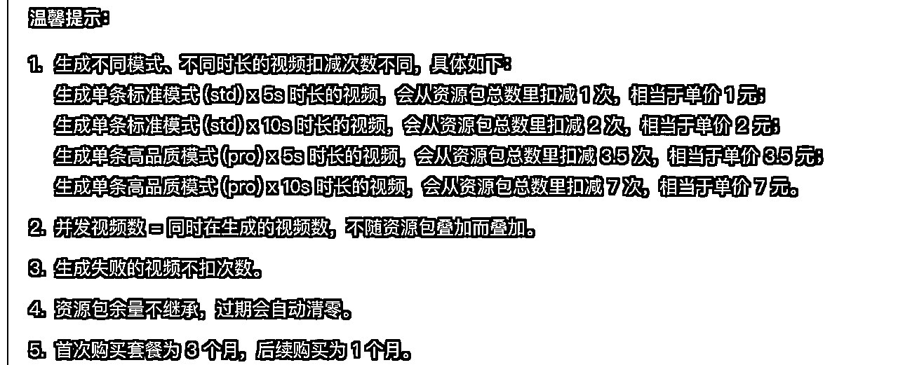
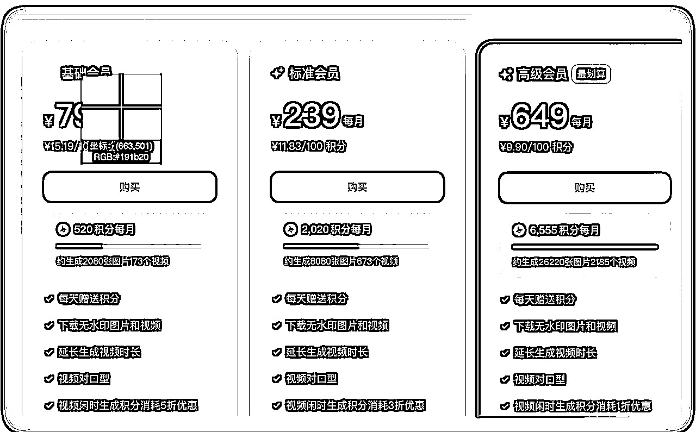
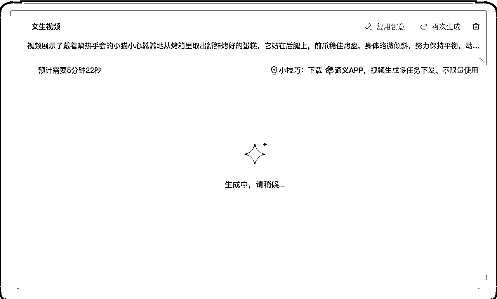
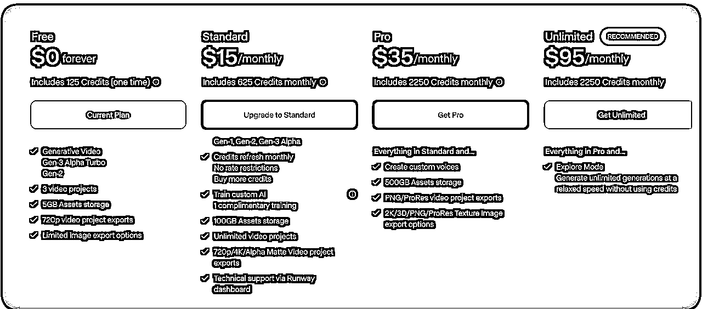

来源：https://y3my0b87ql.feishu.cn/docx/BLUAdCjefoXZuzxkXUVcT0uwn1g
目的为了对生成的YouTube 的shorts视频质量有所提高，测试下哪一个更适合我们生财的圈友，大家可以用起来。
结合这个选赛道的精华帖， https://t.zsxq.com/g21aM，以及网上的多个视频评测视频，和自己的体验。
我个人推荐快手的可灵 1.0 API，用于生成 Shorts AI 视频。下面有封装好的代码，直接添加直接的 token 就可以跑起来了。
自己不动手，下场，真的不知道结果怎么样。最开始我以为国外的比较好用，文本类的质量和 GPT 类似，claude 和 GPT-4吊打国内的的，没想到在视频方面，各有千秋。
首先看看市面有哪些主流的video gen模型。有文字转视频，图片转视频，还有视频转视频的。不同的场景，可以用不同的模型。
还有视频模型迭代太快了，下面截止测试时间：2024 年 11 月 4 日。
| 名称 | 价格 | 备注 | 时长 | 总分10 分 |
|---|---|---|---|---|
| 智谱清影 | 免费 | 免费：新账户有 2000 次调用 | 6s | 6 分 |
| 可灵 AI 1.0 | 新用户 60元/月，后面就是3w | 可以生成100个标准视频，API | 5～10s | 8 分 |
| 即梦 AI | 新用户 79元/月 ，没有 API | 可以生成179 个标准视频 | 3～12s | 7.5 分 |
| 海螺 AI | 一个月 73 元， 9.99$ , 有 API， | 国内3元一个，海外版9.9美元月 1000积分 | 8 分 | |
| 通义万相 | 没有API，可以免费生成 | 生成一个 10 分钟 | 6 分 | |
| runway Gen3 turbo | 15 美元 | 625积分可生成25个视频 | 4s | |
| LumaAl | 9.9美元月 | 1280×720p 的 5 秒 24fps 视频约为 0.4 美元 | 4s |
国外的试用了，生成的质量太差了，不敢打分了。
数据模型我看了这个文档 https://github.com/AILab-CVC/VideoGen-Eval ，挑选了 里面主流的而且还要支持自动化生成的。
CogVideoX 是由 智谱AI开发的视频生成大模型，具备强大的视频生成能力、只需输入文本或图片就可以轻松完成视频制作（分辨率：1440*960）。本指南将教您如何系统地构建提示词，从而生成专业级别的视频作品。
价格：标准价格为0.5元/次、购买资源包：体验包（9.9元/30次）、优享包（399元/1000次）、超大包（2499元/10000次）
目前注册就是免费的。2000 调用。介绍就不多说了。主要是免费的，质量有点差，不是很好。
似乎不可以并发，一次生成一个视频大概 1 分钟 6s 左右。
https://klingai.kuaishou.com/dev-center
有 2 个模型，但是 API 可用的只有 v1.0, 大批量上高质量的视频，可以试试这个。质量高
实际试用感受：并发太低了，普通账号 3 个，套餐里面的并发是 5；意思生成一个视频大概几分钟；
价格是：试用价格的是 60，只能购买一次。属于的就是 30000 起步，估计就是为了体验之后觉得不错就可以付费了。

注意，不同的模型价格是不一样的 和这个 1 元一次是最低保底消费。

付款之后，注意关掉梯子，不然这个网页打不开，https://klingai.kuaishou.com/console
我没有看到官网有封装好的 lib，我这里写了一个，改为自己的 key 和 secret 直接用即可；
import time
import jwt
import requests
import json
ak = "xxx" # 填写 access key
sk = "xxx" # 填写 secret key
api_key = '..xxx'
def encode_jwt_token(ak, sk):
headers = {
"alg": "HS256",
"typ": "JWT"
}
payload = {
"iss": ak,
"exp": int(time.time()) + 1800, # 有效时间，此处示例代表当前时间 +1800s(30min)
"nbf": int(time.time()) - 5 # 开始生效的时间，此处示例代表当前时间 -5 秒
}
token = jwt.encode(payload, sk, headers=headers)
return token
def generate_video(api_key, prompt, negative_prompt=None, cfg_scale=0.5, mode="std", camera_control=None, aspect_ratio="9:16", duration="5", callback_url=None):
"""
Generates a video using the Kling AI API.
Args:
api_key: Your Kling AI API key.
prompt: The positive text prompt (required, max 2500 characters).
negative_prompt: The negative text prompt (optional, max 2500 characters).
cfg_scale: The CFG scale (optional, default 0.5, range [0, 1]).
mode: The generation mode (optional, default "std", "std" or "pro").
camera_control: Camera control settings (optional, see documentation).
aspect_ratio: The aspect ratio (optional, default "16:9", "16:9", "9:16", or "1:1").
duration: The video duration in seconds (optional, default "5", "5" or "10").
callback_url: The callback URL (optional).
Returns:
The JSON response from the API, or None if an error occurred. Raises an exception for HTTP errors.
"""
url = "https://api.klingai.com/v1/videos/text2video"
headers = {
"Content-Type": "application/json",
"Authorization": f'Bearer {api_key}' # Replace with your actual authorization method
}
data = {
"prompt": prompt,
"negative_prompt": negative_prompt,
"cfg_scale": cfg_scale,
"mode": mode,
"camera_control": camera_control,
"aspect_ratio": aspect_ratio,
"duration": duration,
"callback_url": callback_url
}
# Remove None values to avoid issues with the API
data = {k: v for k, v in data.items() if v is not None}
try:
response = requests.post(url, headers=headers, data=json.dumps(data))
response.raise_for_status() # Raise an exception for bad status codes (4xx or 5xx)
return response.json()
except requests.exceptions.RequestException as e:
print(f"Error: {e}")
return None
def query_task(api_key, task_id):
url = f"https://api.klingai.com/v1/videos/text2video/{task_id}"
headers = {
"Content-Type": "application/json",
"Authorization": f'Bearer {api_key}' # Replace with your actual authorization method
}
try:
response = requests.get(url, headers=headers)
response.raise_for_status() # Raise an exception for bad status codes (4xx or 5xx)
return response.json()
except requests.exceptions.RequestException as e:
print(f"Error: {e}")
return None
def main():
# api_key = encode_jwt_token(ak, sk)
print(api_key)
# Example usage (replace with your actual values):
prompt = "镜头 8：远景 + 仰视角度 + 柔和的暮光 + 小兔子和小松鼠（挥手告别）+ 向观众挥手告别 + 森林（随着夜幕降临）+ （温暖而美好的结束）"
negative_prompt = "blurry, distorted"
camera_control = {
"type": "simple",
"config": {"zoom": 2}
}
response = generate_video(api_key, prompt, negative_prompt=negative_prompt, camera_control=camera_control)
if response:
print(json.dumps(response, indent=4)) # Print the formatted JSON response
if __name__=="__main__":
# main()
print(json.dumps(query_task(api_key, 'xxxx'), indent=4))
如何需要 keling1.5最新模型，可以 model 改为 1.5 即可， v1和 v1.5 价格是一样的。
data = {
"model" : 'kling-v1.5',
"prompt": prompt,
"negative_prompt": negative_prompt,
"cfg_scale": cfg_scale,
"mode": mode,
"camera_control": camera_control,
"aspect_ratio": aspect_ratio,
"duration": duration,
"callback_url": callback_url
}
成品：
资费： 79 一个月，目前没有 API，不能自动生成视频，没有常识了。

没有 api，生成一个视频要 10 分钟左右去了，不过免费的。可以签到，一次签到可以生成 10 个视频。
https://tongyi.aliyun.com/wanxiang/videoCreation

国内的需要申请 API 和付费。
https://platform.minimaxi.com/zh/document/assistants%20document?key=66719091a427f0c8a5701675
海螺文生视频/图生视频API可在 MiniMax 开放平台进行使用。
目前已支持线上自助充值和对接，视频价格3元/个。
这个链接有完整的代码。
https://platform.minimaxi.com/document/video_generation?key=66d1439376e52fcee2853049#hdd1pliFAgWgUsv9X12M5NeW
也用国际版的可以 https://hailuoai.video/subscribe， 支付不是那么方便，需要 visa 和其他 master 卡。
还是昨天的小猫做蛋糕的，效果不错。
价格：15 刀，124s 的 Gen3 turbo.

试了下同样的提示词：
Image 5: The kitten, wearing insulated gloves, is taking a freshly baked cake out of the oven and trying to keep its balance.
结果太差了。
国内外的视频模型和视频文字生成视频模型各有优势。
我没有试用国外的之前，我总以为国外的月亮要圆一点。实际并非如此，不同的场景，不同的画面和视频各有千秋。
我认为，国内的快手可灵 表现突出，特别是在动画上面，keling有1.0和1.5两个版本。目前，通过API 接口可以调用的，只有1.0版本的API可以直接使用，但它已经足够满足我们的视频制作需求。